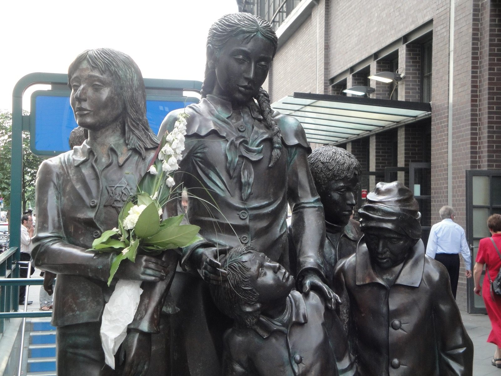

Kapitel 19 – Jødehader til den bitre ende
Nazisterne fortsætter og intensiverer deres kamp mod den folkefremmede kunst og Nolde ekskluderes af Rigskammeret for Billedkunst. Nu bruger Nolde og Ada alle deres kræfter på at bringe så meget kunst som muligt i sikkerhed, først for nazisternes kunstvendetta og siden for de allieredes luftangreb. På trods af alt fastholder ægteparret deres antijødiske konspirationsteorier til krigens slutning.